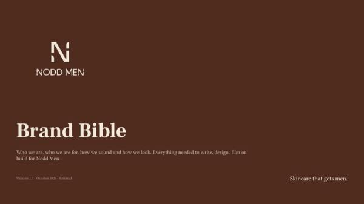
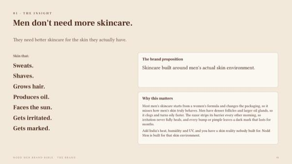
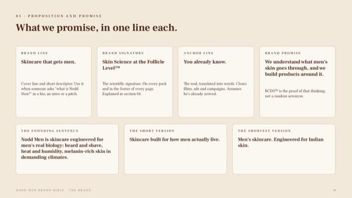
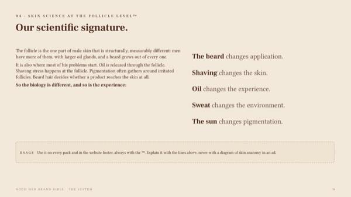
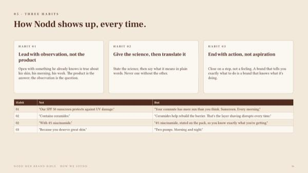
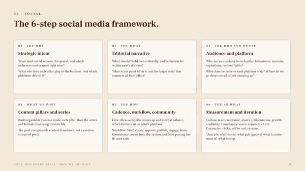
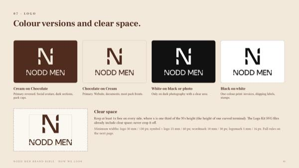
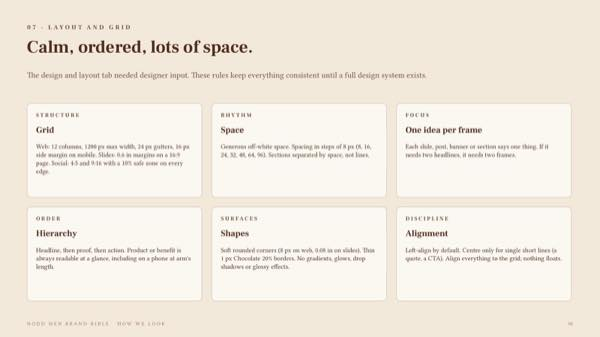

Original deck · Selected pages
Real slides from the Brand Bible.
This gallery uses original pages from the Nodd Men PowerPoint, selected to show the strategic and visual systems behind the brand.








The complete deck remains an internal working document. This portfolio selection focuses on the deck’s visual and strategic framework, without presenting the full research archive or operating materials.